cerealtom.com
A collection of pictures old and new from past and ongoing personal projects -
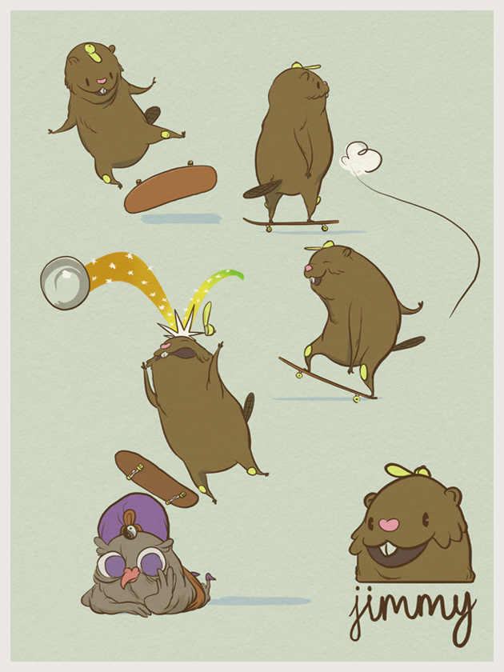
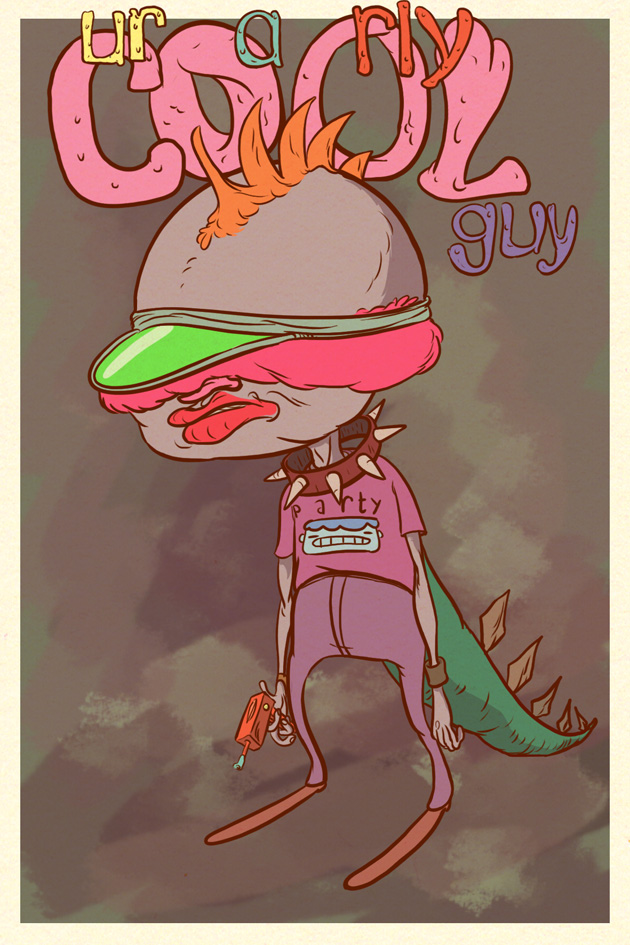
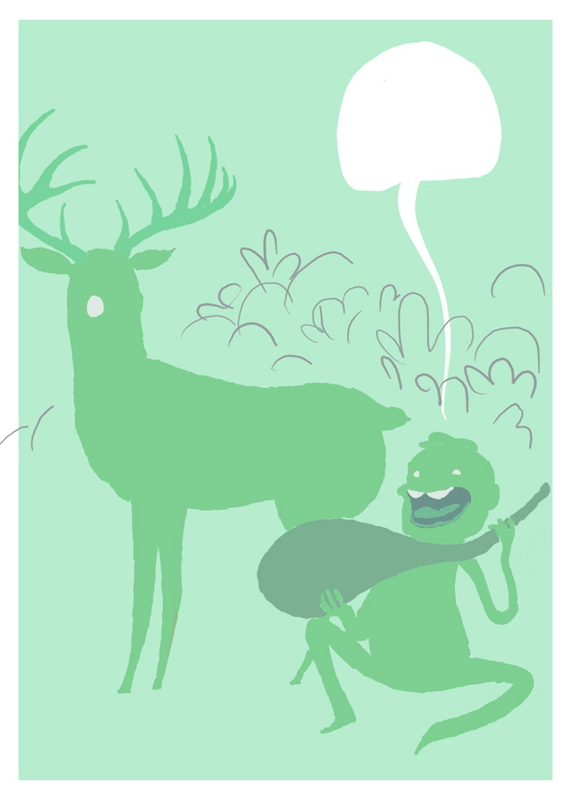
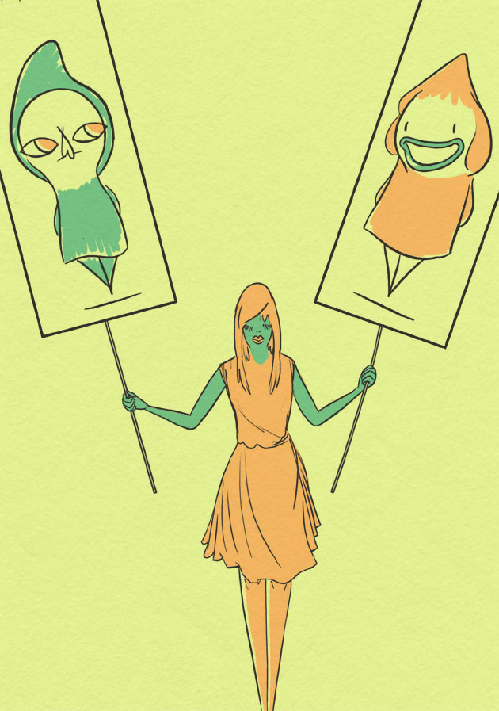
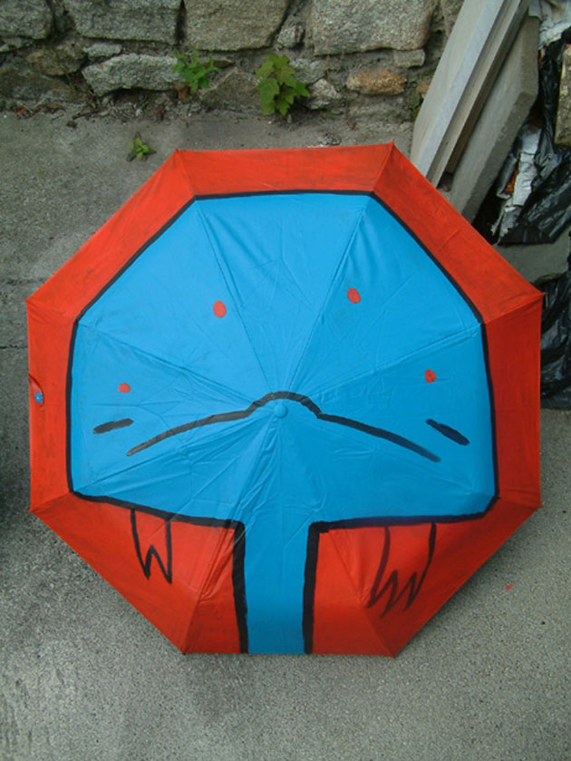
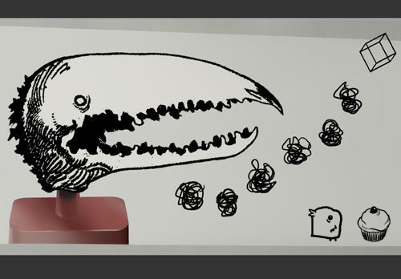
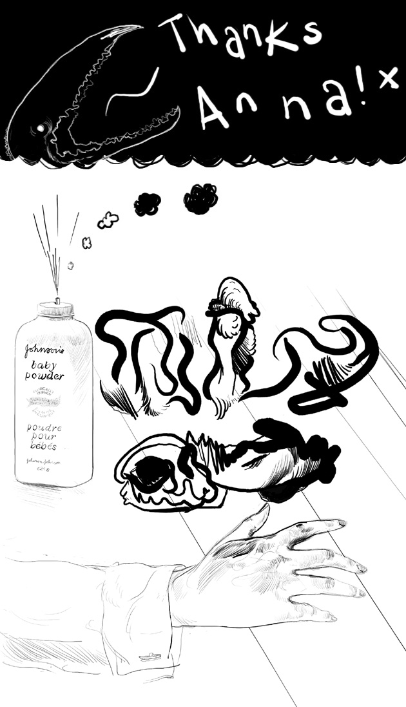


Contact:tom@cerealtom.com
All contents © Tom Moore 2014
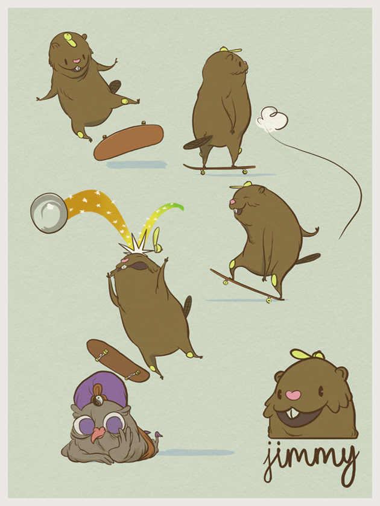
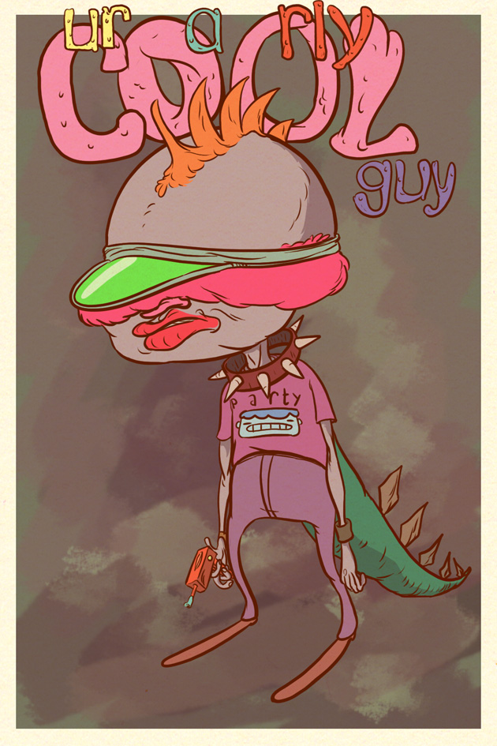
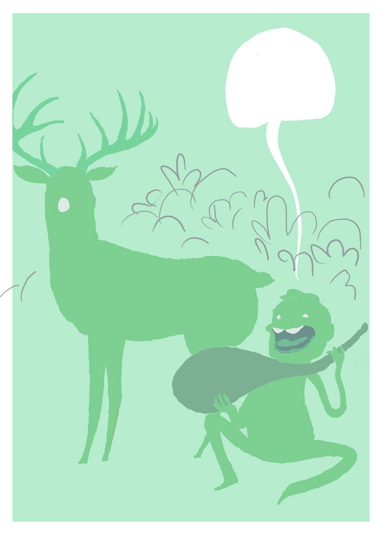
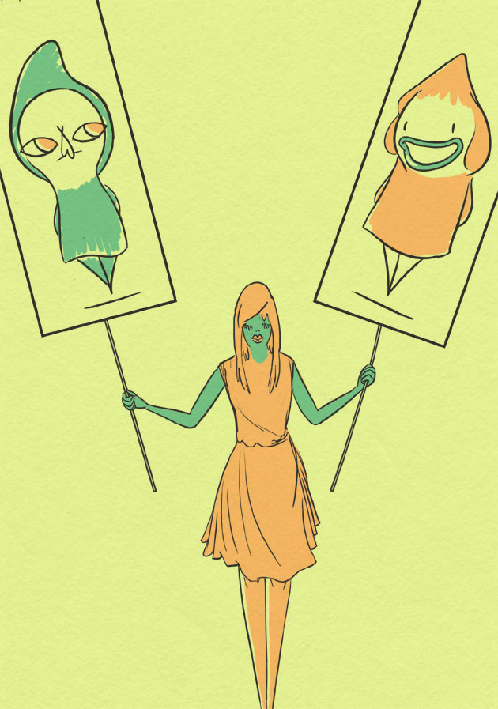
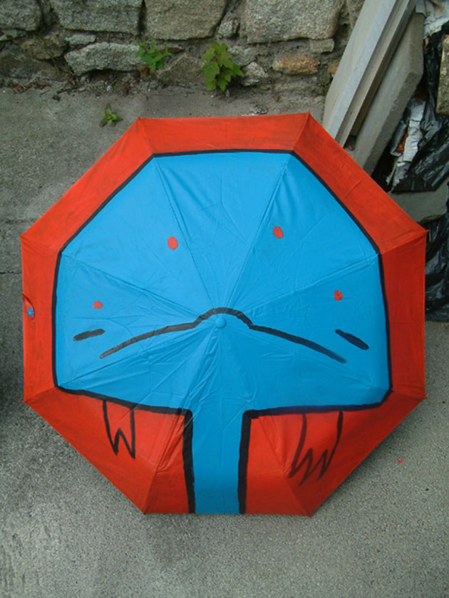
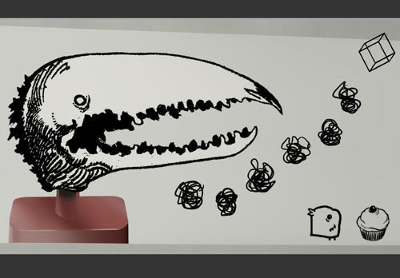
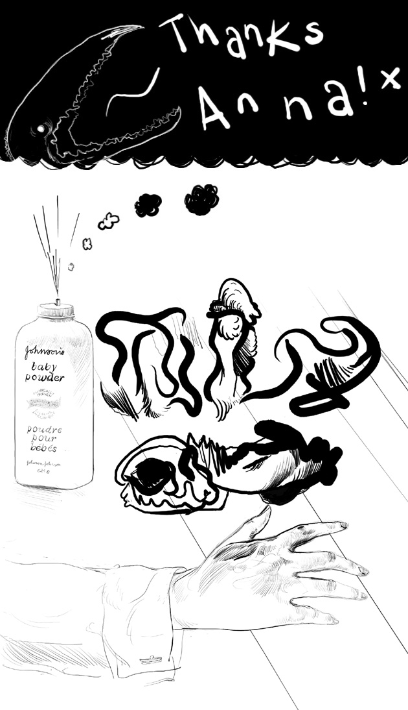
Contact:tom@cerealtom.com
All contents © Tom Moore 2014